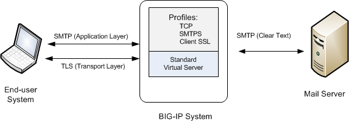
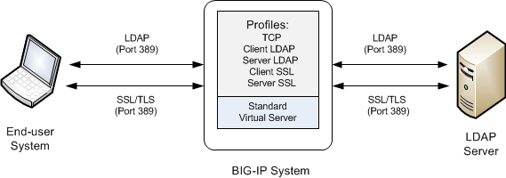
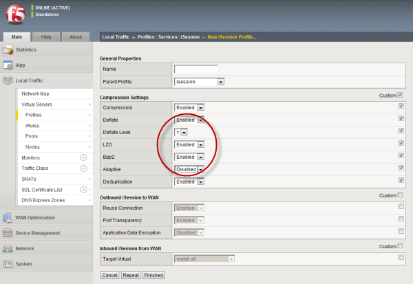
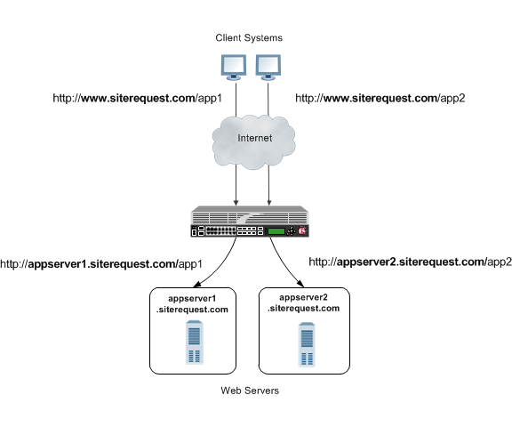

Updated Date: 07/07/2026
Services Profiles
The BIG-IP system offers several features that you can use to intelligently control your application-layer traffic. These features are available through various configuration profiles.
A profile is a group of settings, with values, that correspond to a specific type of traffic, such as FTP traffic. A profile defines the way that you want the BIG-IP system to manage that traffic type. After you configure the type of profile you need, you assign it to a virtual server.
In addition to Services profiles, the BIG-IP system includes other features to help you manage your application traffic, such as health monitors for checking the health of an FTP service, and iRules® for querying or manipulating header or content data. Additional profiles may be available with other modules.
The BIG-IP system offers several features that you can use to intelligently control your application layer traffic. Examples of these features are the insertion of headers into HTTP requests and the compression of HTTP server responses.
These features are available through various configuration profiles. A profile is a group of settings, with values, that correspond to HTTP traffic. A profile defines the way that you want the BIG-IP system to manage HTTP traffic.
You can configure an HTTP profile to ensure that HTTP traffic management suits your specific needs. You can configure the profile settings either when you create a profile or after you create the profile by modifying the profile’s settings. For all profile settings, you can specify values where none exist, or modify any default values to suit your needs. The BIG-IP system also includes default profiles that you can use as is, if you do not want to create a custom profile.
To manage HTTP traffic, you can use any of these profile types:
- HTTP (Hypertext Transfer Protocol)
- HTTP Compression
- Web Acceleration
In addition to the HTTP profiles, the BIG-IP system includes other features to help you manage your application traffic, such as health monitors for checking the health of HTTP and HTTPS services, and iRulesfor querying or manipulating header or content data.
There are a few general settings that you can configure to create a basic HTTP type of profile that uses most of the default settings.
The HTTP profile provides three proxy modes: Reverse, Explicit, and Transparent. You can configure a custom HTTP profile that uses a specific proxy mode, and assign the custom HTTP profile to a virtual server to manage proxying of HTTP traffic, as necessary.
|
Proxy Mode |
Description |
|---|---|
|
Reverse |
Default. You can specify the Reverse Proxy Mode to enable the BIG-IP system to manage responses from multiple servers. |
|
Explicit |
The Explicit Proxy Mode enables the BIG-IP system to handle HTTP proxy requests and function as a gateway. By configuring browser traffic to use the proxy, you can control whether to allow or deny a requested connection, based on configured policies. The Explicit Proxy Mode requires a DNS resolver, specified in the Explicit Proxy area of the screen. Important: Explicit proxy mode is not compatible with connection mirroring. Ensure that connection mirroring is disabled for virtual servers that use HTTP profiles in Explicit proxy mode. |
|
Transparent |
The Transparent Proxy Mode enables the BIG-IP system to forward invalid HTTP traffic instead of dropping the connection. By configuring an HTTP profile to forward invalid HTTP traffic, you can manage various atypical service provider scenarios, such as HTTP traffic from non-browser clients that function as web browsers. |
Every profile that you create is derived from a parent profile. You can use the default http profile as the parent profile, or you can use another HTTP profile that you have already created.
There are several general settings that you can configure to create an HTTP type of profile.
The Basic Auth Realm setting provides a quoted string for the basic authentication realm. The BIG-IP system sends this string to a client whenever authorization fails.
Another feature that you can configure within an HTTP profile is HTTP redirection. HTTP redirection allows you to redirect HTTP traffic to another protocol identifier, host name, port number, or URI path.
Redirection to a fallback host occurs if all members of the targeted pool are unavailable, or if a selected pool member is unavailable. (The term unavailable refers to a member being disabled, marked as down, or having exceeded its connection limit.) When one or more pool members are unavailable, the BIG-IP system can redirect the HTTP request to the fallback host, with the HTTP reply Status Code 302 Found.
Although HTTP redirection often occurs when the system generates an LB_FAILED iRule event, redirection can also occur without the occurrence of this event, such as when:
- The selected node sends an
RSTafter aTCP 3WHShas completed, but before the node has sent at least a full response header. - The BIG-IP system finds the selected node to be unreachable while receiving the body portion of a request or a pipelined request.
When configuring the BIG-IP system to redirect HTTP traffic to a fallback host, you can specify an IP address or a fully-qualified domain name (FQDN). The value that you specify becomes the value of the Location header that the server sends in the response. For example, you can specify a redirection as http://redirector.siterequest.com.
In addition to redirecting traffic when a target server becomes unavailable, you can also specify the HTTP error codes from server responses that should trigger a redirection to the fallback host. Typical error codes to specify are 500, 501, and 502.
You can insert headers into HTTP requests. The HTTP header being inserted can include a client IP address. Including a client IP address in an HTTP header is useful when a connection goes through a secure network address translation (SNAT) and you need to preserve the original client IP address.
The format of the header insertion that you specify is generally a quoted string. Alternatively, however, you can insert a Tools Command Language (Tcl) expression into a header that dynamically resolves to the preferred value. When you assign the configured HTTP profile to a virtual server, the BIG-IP system then inserts the header specified in the profile into any HTTP request that the BIG-IP system sends to a pool or pool member.
Note: In addition to inserting a string such as a client IP address into an HTTP request, you can configure the BIG-IP system to insert SSL-related headers into HTTP requests. Examples are: client certificates, cipher specifications, and client session IDs. To insert these types of headers, you must create an iRule.
You can configure a profile to erase the contents of a header from an HTTP request that is being sent from a client to a server. With this feature, you can erase header content from HTTP requests before forwarding the requests over the network. Such headers might contain sensitive information, such as user IDs or telephone numbers, that must be erased before the information is forwarded.
When you use this setting, the BIG-IP system erases the contents of the specified header and replaces that content with blank spaces. The header itself is retained.
Note: This feature does not apply to HTTP responses being sent from a server to a client.
The client header with the contents to be erased must be specified as a quoted string.
You can specify any headers within an HTTP response that you want the BIG-IP system to allow. If you are specifying more than one header, separate the headers with a blank space. For example, if you type the string Content-Type Set-Cookie Location, the BIG-IP system then allows the headers Content-Type, Set-Cookie, and Location.
The chunked transfer encoding method modifies the body of an HTTP message and transfers it as a series of chunks. The Request Chunking setting within an HTTP profile specifies how the BIG-IP system handles HTTP content that is chunked by the client. The BIG-IP system allows HTTP and other features to control chunking as the payload transitions through the system. The behavior with each option depends on whether the client sends chunked or unchunked requests.
| Option | If the request is CHUNKED on ingress… | If the request is UNCHUNKED on ingress… |
|---|---|---|
| Rechunk | The BIG-IP system unchunks the HTTP content, processes the data, re-adds the chunk headers, and then sends the chunked request to the server. | The BIG-IP system processes the HTTP content, adds the transfer encoding and chunk headers to the response, and then sends the chunked request to the server. |
| Sustain (Default) | The BIG-IP system preserves the payload and sends it to the server as chunked. Any chunk extensions are lost. | The system can send the payload to the server as unchunked, or, if an iRule or an HTTP payload handler requests chunking, the system can add the Transfer-Encoding: Chunked headers and send the payload as chunked. |
The chunked transfer encoding method modifies the body of an HTTP message and transfers it as a series of chunks. The Response Chunking setting within an HTTP profile specifies how the BIG-IP system handles HTTP content that is chunked by the server. The BIG-IP system allows HTTP and other features to control chunking as the payload transitions through the system. The behavior with each option depends on whether the server sends chunked or unchunked responses.
| Option | If the response is CHUNKED on ingress… | If the response is UNCHUNKED on ingress.. |
|---|---|---|
| Unchunk | The BIG-IP system unchunks the response and processes the HTTP content, and passes the response to the client as unchunked. The connection closes when all data is sent to the client as indicated by the Connection: Close header. If the content length is undefined because an HTTP payload handler modified the content, the system closes the connection. |
The BIG-IP system processes the HTTP content and passes the response to the client untouched. If the content length is undefined because an HTTP payload handler modified the content, the system closes the connection. |
| Rechunk | The BIG-IP system unchunks the response, processes the HTTP content, re-adds the chunk trailer headers, and then passes the response to the client as chunked. Any chunk extensions are lost. | The system adds the Transfer-Encoding: Chunked headers and sends the payload to the client as chunked. |
| Sustain (Default) | The system preserves the payload and sends it to the client as chunked. Any chunk extensions are lost. | The system can send the payload to the client as unchunked, or, if an iRule or HTTP payload handler requests chunking, the system can add the Transfer-Encoding: Chunked headers and send the payload as chunked. |
You can enable or disable part of the OneConnect™ feature, for HTTP/1.0 connections only. When this setting is enabled and a OneConnect profile is assigned to the virtual server, the setting performs Connection header transformations, for the purpose of keeping a client connection open. More specifically:
- A client sends an HTTP/1.0 request.
- The server sends a response, which initially includes a
Connection: Closeheader. - the BIG-IP system transforms the
Connection: Closeheader toConnection: Keep-Alive. - Through use of the OneConnect profile, the server-side connection detaches, goes into the pool of available server-side connections used for servicing other requests, and eventually closes. This process is hidden from the client.
- The client-side connection remains open, operating under the assumption that the server-side connection is still open and therefore able to accept additional requests from that client.
Note: For this feature to take effect, you must also configure a OneConnect™ profile, which enables connection pooling.
Sometimes, a client request is redirected from the HTTPS protocol to the HTTP protocol, which is a non-secure channel. If you want to ensure that the request remains on a secure channel, you can cause the redirection to be rewritten so that it is redirected back to the HTTPS protocol.
To enable the BIG-IP system to rewrite HTTP redirections, you use the Rewrite Redirections setting to specify the way that you want the system to handle URIs during the rewrite.
Note that the rewriting of any redirection takes place only in the HTTP Location header of the redirection response, and not in any content of the redirection. Also note that when the virtual server is listening on a non-standard port, the location header in the redirect responses must include an explicit port (such as Location: http://1.2.3.3:443/). Otherwise, the client system will simply see Location: http://1.2.3.3/.
When configuring the BIG-IP system to rewrite HTTP redirections, you specify one of these values:
- None
- The system does not rewrite any redirections. This is the default value.
- All
- The system rewrites the URI in all HTTP redirect responses. In this case, the system rewrites those URIs as if they matched the originally-requested URIs.
- Matching
- The system rewrites the URI in any HTTP redirect responses that match the request URI (minus an optional trailing slash).
- Nodes
- The system rewrites the hidden node IP address to a virtual server address, and rewrites the port number. You choose this value when the virtual server is not configured with a Client SSL profile (that is, when the virtual server is configured to process plain HTTP traffic only).
Note: For values All, Matching, and Nodes, the system always hides the node IP address. Also, the system hides the node IP address independently of the protocol rewrite, with no regard to the protocol in the original redirection.
This table shows examples of how redirections of client requests are transformed, and the Rewrite Redirections setting is enabled. Note that when the virtual server is listening on a non-standard port, the location header in the redirect responses must include an explicit port (such as Location: http://1.2.3.3:443/). Otherwise, the client system will simply see Location: http://1.2.3.3/.
| Original Redirection | Rewrite of Redirection |
|---|---|
| http://www.myweb.com/myapp/ | https://www.myweb.com/myapp/ |
| http://www.myweb.com:8080/myapp/ | https://www.myweb.com/myapp/ |
You can use the BIG-IP Configuration utility to encrypt one or more cookies that the BIG-IP system sends to a client system. When the client sends the encrypted cookie back to the BIG-IP system, the system decrypts the cookie.
When using connection pooling, which allows clients to make use of existing server-side connections, you can insert the XForwarded For header into a request. When you configure the BIG-IP system to insert this header, the target server can identify the request as coming from a client other than the client that initiated the connection. The default setting is Disabled.
You can specify the maximum number of columns allowed for a header that is inserted into an HTTP request.
You can specify the separator that the BIG-IP system should use between HTTP headers when a header exceeds the maximum width specified by the LWS Maximum Columns feature.
You can specify the maximum number of requests that the system allows for a single Keep-Alive connection. When the specified limit is reached, the final response contains a Connection: close header, which is followed by the closing of the connection. The default setting is 0, which in this case means that the system allows an infinite number of requests per Keep-Alive connection.
You can configure the BIG-IP system to remove, preserve, or append Via headers in HTTP client requests, HTTP server responses, or both.
Via headers provide useful information about intermediate routers that can be used in network analysis and troubleshooting.
The Via header, configured in an HTTP profile, provides information about each intermediate router that forwards a message. Intermediate routers between a client and an origin web server use the Via header to indicate intermediate protocols and recipients. This information can be used for the following tasks:
- Identifying the intermediate routers that forward messages.
- Identifying the protocols for intermediate routers.
The Via header, configured in an HTTP profile, concatenates information for each router in a response or request, separated by commas. For example, the following Via header includes two routers, with each router comprising the required protocol and address:
Via: 1.1 wa.www.siterequest1.com, 1.1 wa.www.siterequest2.com
When a client initiates a request with a Via header to an origin web server, the origin web server returns a response with a Via header often following a similar path. For example, a Via header router sequence for the request would be 1, 2, 3, and the router sequence for the client’s response would be 3, 2, 1.
The inverse is true when an origin web server initiates a response with a Via header to a client. For example, a Via header router sequence for a response would be 1, 2, 3, and the router sequence for the client’s request would be 3, 2, 1.
You can identify specific protocols and versions of protocols for intermediate routers by using a Via header, configured in an HTTP profile. When a client sends a request to an origin web server, the header information is concatenated for each intermediate router, including the protocol type (if different from HTTP) and version.
The Via header includes both required and optional protocol information about each router, as follows:
-
The HTTP protocol name is optional; however, other protocol names are required.
-
The protocol version of the message is required, which for HTTP is 1.0, 1.1, and so on.
-
The host name is required. For privacy purposes, however, an alias can replace the actual host name.
-
The port number associated with the host name is optional. When the port number is omitted, the default port applies.
-
A comment describing the router is optional, and includes whatever string you specify in the Send Proxy Via Header Host Name field, by selecting Append in the list for Send Proxy Via Header In Request or Send Proxy Via Header In Response.
Note: If you prefer to replace the host name with another string, instead of appending a string to the
Viaheader, you must use an iRule or the command line.
Because the Via header includes the protocol name and version, applications are able to acquire this information for the various intermediate routers and use it, as necessary.
This table describes controls and strings for Via Header settings in an HTTP profile.
|
Control |
Default |
Description |
|---|---|---|
|
Send Proxy Via Header In Request |
Remove |
Specifies whether to Remove, Preserve, or Append
|
|
Send Proxy Via Header In Response |
Remove |
Specifies whether to Remove, Preserve, or Append
|
|
Send Proxy Via Header Host Name |
None |
Specifies a string to append as a comment when sending a |
This setting enables or disables trusting the client IP address, and statistics from the client IP address, based on the request’s X-Forwarded-For (XFF) headers, if they exist.
Specifies alternative XFF headers instead of the default X-Forwarded-For header. If you are specifying more than one alternative XFF header, separate the alternative XFF headers with a blank space, such as client1 proxyserver 129.78.138.66.
When you create an HTTP profile, you can specify the string used as the server name in traffic generated by the BIG-IP system. The default value is BigIP.
There are some settings related to enforcement that you can configure to create an HTTP type of profile.
When you configure an HTTP profile within BIG-IP Local Traffic Manager (LTM) and enable the Enforce RFC Compliance setting, BIG-IP LTM performs basic RFC compliance checks as described in the latest RFC for the HTTP protocol. If a client request fails these checks, then the connection is reset.
By default, the Enforce RFC Compliance setting in the HTTP profile is set to Disabled. When you switch the setting to Enabled, and the profile is assigned to the relevant virtual server, the BIG-IP system attempts to reject non-RFC-compliant HTTP traffic.
If you want the BIG-IP system to perform additional compliance checks, or if a blocking page is required, you can provision the optional BIG-IP Application Firewall Manager (AFM) module and configure its HTTP Protocol Security feature. You can also provision and configure the optional BIG-IP Application Security Manager (ASM) module. If either of these modules is provisioned and configured (or both are provisioned and configured), the BIG-IP system ignores the HTTP profile’s Enforce RFC Compliance setting altogether.
The Allow Truncated Redirect setting determines the way in which the BIG-IP system passes through traffic, when a redirect that lacks the trailing carriage-return and line-feed pair at the end of the headers is parsed. The default is Disabled, which silently drops the invalid HTTP request.
This setting specifies the maximum size in bytes that the BIG-IP system allows for all HTTP request headers combined, including the request line. If the combined headers length in bytes in a client request exceeds this value, the system stops parsing the headers and resets the TCP connection. The default value is 32,768 bytes.
The Oversize Client Headers setting determines the way in which the BIG-IP system passes through HTTP traffic when the Maximum Header Size value is exceeded by the client. The default is disabled, which rejects the connection.
Note: This feature is only available on the HTTP profile when you set the proxy mode feature to Transparent.
The Oversize Server Headers setting determines the way in which the BIG-IP system passes through HTTP traffic when the Maximum Header Size value is exceeded by the server. The default is disabled, which rejects the connection.
Note: This feature is only available on the HTTP profile when you set the proxy mode feature to Transparent.
The Maximum Header Count setting determines the maximum number of headers in an HTTP request or response that the BIG-IP system accepts. If a client or server sends a request or response with the number of headers exceeding the specified value, then the connection is dropped. The default value is 64.
The Excess Client Headers setting specifies the way in which the BIG-IP system passes through HTTP traffic when the Maximum Header Count value is exceeded by the client. The default is disabled, which rejects the connection.
Note: This feature is only available on the HTTP profile when you set the proxy mode feature to Transparent.
The Excess Server Headers setting specifies the way in which the BIG-IP system passes through HTTP traffic when the Maximum Header Count value is exceeded by the server. The default is disabled, which rejects the connection.
Note: This feature is only available on the HTTP profile when you set the proxy mode feature to Transparent.
Normally, a client cannot initiate a request until the previous request has received a response. HTTP/1.1 pipelining allows clients to initiate multiple requests even when prior requests have not received a response. Note, however, that each initiated request is still processed sequentially; that is, a request in the queue is not processed until the previous request has received a response.
By enabling support for pipelining on the BIG-IP system, you remove the need to enable pipelining on the destination server itself. By default, this feature is enabled.
The Unknown Method setting determines the way in which the BIG-IP system manages HTTP traffic when an unknown HTTP method is parsed. You can configure the Unknown Method setting to allow, reject, or pass through the HTTP traffic. The default is to allow unknown methods.
In the Known Methods setting, the Enabled Methods list determines the way in which the BIG-IP system manages HTTP traffic when known HTTP methods are parsed. You configure the Known Methods Enabled Methods list to allow the BIG-IP system to manage specified known methods with optimum performance.
The default Enabled Methods list includes the following HTTP/1.1 methods.
- CONNECT
- DELETE
- GET
- HEAD
- LOCK
- OPTIONS
- POST
- PROPFIND
- PUT
- TRACE
- UNLOCK
If you delete a known method from the Enabled Methods list, then the BIG-IP system applies the Unknown Method setting to manage that traffic.
Important: Removing a standard method, such as HEAD or CONNECT, causes BIG-IP functionality that depends on detecting that method to fail to work correctly.
You can add a user-defined method to the Enabled Methods list by typing the method in the Add user defined method field, and then clicking Add.
When you set the proxy mode to Explicit, you must also configure the settings in the Explicit Proxy area of the HTTP profile.
Important: Explicit proxy mode is not compatible with connection mirroring. Ensure connection mirroring is not enabled for virtual servers using HTTP profiles in Explicit proxy mode. This also applies to secondary virtual servers that listen on the tunnels used by HTTP explicit proxy profiles.
The DNS Resolver setting specifies the DNS resolver to use for DNS inquiries handled by the virtual servers associated with the HTTP explicit forward proxy profile you are creating.
Note: This setting is available on the HTTP profile only when you set the proxy mode feature to Explicit, in which case the setting is required. If no DNS resolver exists on the system, you can create one at Network > DNS Resolvers > DNS Resolvers List > Create.
The IPv6 setting specifies the relative order of IPv4 and IPv6 DNS resolutions for URIs. The default is disabled, causing the BIG-IP system to attempt an IPv4 lookup before an IPv6 lookup.
You can configure an HTTP profile to specify the route domain that is used for outbound connect requests for the explicit forward proxy feature. The default route domain is 0.
Note: This setting is available on the HTTP profile only when you set the proxy mode feature to Explicit.
The Tunnel Name setting specifies the tunnel that is used for outbound connect requests when the explicit forward proxy feature is used. Specifying a tunnel enables other virtual servers to receive connections initiated by the proxy service.
Note: This setting is available on the HTTP profile only when you set the proxy mode feature to Explicit.
The Host Name setting specifies the name of hosts that should not be proxied when an explicit forward proxy is used.
Note: This setting is available on the HTTP profile only when you set the proxy mode feature to Explicit.
The Default Connect Handling setting specifies the behavior of the forward explicit proxy service when handling outbound requests. By default, this setting is disabled.
- Enabled (checked) indicates that outbound requests are delivered directly, regardless of the presence of listening virtual servers.
- Disabled (check box cleared) indicates that outbound requests are delivered only if another virtual server is listening on the tunnel for the requested outbound connection. With this setting, virtual servers are required, and the system processes the outbound traffic before it leaves the device.
Note: This setting is available on the HTTP profile only when you set the proxy mode feature to Explicit.
You can configure an http explicit forward proxy profile to specify the message that appears when a connection failure occurs. You can include TCL expressions.
Note: This setting is available on the HTTP profile only when you set the proxy mode feature to Explicit.
You can configure an http explicit forward proxy profile to specify the message that appears when a DNS lookup failure occurs. You can include TCL expressions.
Note: This setting is available on the HTTP profile only when you set the proxy mode feature to Explicit.
You can configure an http explicit forward proxy profile to specify the message that appears when a bad request occurs. You can include TCL expressions.
Note: This setting is available on the HTTP profile only when you set the proxy mode feature to Explicit.
You can configure an http explicit forward proxy profile to specify the message that appears when a bad response occurs. You can include TCL expressions.
Note: This setting is available on the HTTP profile only when you set the proxy mode feature to Explicit.
You can configure the HTTP profile to use sFlow technology to monitor traffic passing through the BIG-IP system.
You can configure an HTTP profile to specify the maximum interval in seconds between two pollings. The default value is Default, which represents the value set on the System :: sFlow :: Global Settings :: http :: Properties screen. The initial default value is 10 seconds.
You can configure an HTTP profile to specify the ratio of packets observed to the samples generated. For example, a sampling rate of 2000 specifies that the system randomly generates 1 sample for every 2000 packets observed. The default value is Default, which represents the value set on the System :: sFlow :: Global Settings :: http :: Properties screen. The initial default value is 1024 packets.
An HTTP profile provides HTTP Strict Transport Security (HSTS) settings that insert a Strict-Transport-Security header into HTTP responses. When enabled, HSTS functionality requests that clients only use HTTPS connections (TLS or SSL) to the current host, and optionally to any subdomains of the current host’s domain name, for a specified period of time.
The Mode setting enables and disables HSTS functionality within the HTTP profile. The default is cleared (disabled).
The Maximum Age value specifies the length of time, in seconds, that HSTS functionality requests that clients only use HTTPS to connect to the current host and any subdomains of the current host’s domain name. The default is 16070400 seconds (about six months). A value of 0 re-enables plaintext HTTP access.
The Include Subdomains setting applies the HSTS policy to the HSTS host and its subdomains. The default is selected (enabled).
An HSTS preload list is a list of domains built into a web browser. When you enable the Preload setting, the domain for the web site that this HTTP profile is associated with is submitted for inclusion in the browser’s preload list. This forces the client to send packets over SSL/TLS.
HTTP compression reduces the amount of data to be transmitted, thereby significantly reducing bandwidth usage. All of the tasks needed to configure HTTP compression on the BIG-IP system, as well as the compression software itself, are centralized on the BIG-IP system. The tasks needed to configure HTTP compression for objects in an Application Acceleration Manager module policy node are available in the Application Acceleration Manager, but an HTTP compression profile must be enabled for them to function.
When configuring the BIG-IP system to compress data, you can:
- Configure the system to include or exclude certain types of data.
- Specify the levels of compression quality and speed that you want.
You can enable the HTTP compression option by setting the URI Compression or the Content Compression setting of the HTTP Compression profile to URI List or Content List, respectively. This causes the BIG-IP system to compress HTTP content for any responses in which the values that you specify in the URI List or Content List settings of an HTTP profile match the values of the Request-URI or Content-Type response headers.
Exclusion is useful because some URI or file types might already be compressed. Using CPU resources to compress already-compressed data is not recommended because the cost of compressing the data usually outweighs the benefits. Examples of regular expressions that you might want to specify for exclusion are .*\.pdf, .*\.gif, or .*\.html.
Note: The string that you specify in the URI List or the Content List setting can be either a pattern string or a regular expression. List types are case-sensitive for pattern strings. For example, the system treats the pattern string www.f5.com differently from the pattern string www.F5.com. You can override this case-sensitivity by using the Linux regexp command.
You can use an HTTP Compression profile alone, or with the BIG-IP Application Acceleration Manager, to reduce the amount of data to be transmitted, thereby significantly reducing bandwidth usage. The tasks needed to configure HTTP compression for objects in an Application Acceleration Manager policy node are available in the Application Acceleration Manager, but an HTTP Compression profile must be enabled for them to function.
If you enable compression, you probably do not want the BIG-IP system to compress every kind of server response. Therefore, you can instruct the BIG-IP system to include in compression, or exclude from compression, certain responses that are specified in the URIs of client requests.
More specifically, you can type regular expressions to specify the types of server responses that you want the BIG-IP system to include in, or exclude from, compression. For example, you can specify that you want the system to compress all .htm responses by typing the regular expression .*\.htm. The system then compares that response type to the URI specified within each client request, and if the system finds a match, takes some action.
Note: The string that you specify can be either a pattern string or a regular expression. Note that list types are case-sensitive for pattern strings. For example, the system treats the pattern string www.f5.com differently from the pattern string www.F5.com. You can override this case-sensitivity by using the Linux regexp command.
If you enable compression, you probably do not want the BIG-IP system to compress every kind of server response. Therefore, you can instruct the BIG-IP system to include in compression, or exclude from compression, certain responses that match the Content-Type header in those responses.
For example, you can specify that you want the system to compress responses that match Content-Type header values such as:
text/image/video/application/java.*
For the last example where the Content-Type value you specify in the profile is application/java.*, the BIG-IP system will include or exclude values such as application/java-vm, application/java-serialized, application/javascript, application/java-archive, and so on.
Note: The string that you specify can be either a pattern string or a regular expression. Note that list types are case-sensitive for pattern strings. You can override this case-sensitivity by using the Linux regexp command.
You can specify the compression method that you want the BIG-IP system to use when compressing responses. The two possible compression methods are gzip and deflate.
When compression is enabled, you can specify the minimum length of a server response in uncompressed bytes that the BIG-IP system requires for compressing that response. The BIG-IP system finds the content length of a server response in the Content-Length header of the server response. Thus, if the content length specified in the response header is below the value that you assign for minimum content length, LTM does not compress the response. The length in bytes applies to content length only, not headers.
For example, using the default value of 1024, the BIG-IP system compresses only those responses with HTTP content containing at least 1024 bytes.
Sometimes the Content-Length header does not indicate the content length of the response. In such cases, the system compresses the response, regardless of size.
When compression is enabled, you can specify the maximum number of compressed bytes that the BIG-IP system buffers before deciding whether or not to preserve a Keep-Alive connection and rewrite the Content-Length header.
For example, using the default value of 4096, the BIG-IP system buffers up to 4096 bytes of compressed data before deciding whether or not to preserve the connection and rewrite the Content-Length header.
The BIG-IP system decision to rewrite the Content-Length header depends on whether response chunking is enabled (using the Response Chunking profile setting).
When compression is enabled, the Vary Header setting inserts the Vary: Accept-Encoding header into a compressed server response. If the Vary header already exists in the response, Local Traffic Manager appends the value Accept-Encoding to that header.
The reason for inserting the Vary: Accept-Encoding header into a server response is to follow a recommendation by RFC2616, which states that the Vary header should be inserted into any cacheable response that is subject to server-driven negotiation. Server responses that are subject to HTTP compression fall into this category.
If the Vary Header setting is disabled, the BIG-IP system does not insert the Vary header into a server response.
To disable the Vary header, locate the Vary Header setting and clear the Enabled box.
The HTTP/1.0 Requests setting is included for backward compatibility, allowing HTTP compression for responses to HTTP/1.0 client requests. The default value for this setting is Disabled.
If this setting is set to Enabled, the BIG-IP system only compresses responses in either of the following cases:
- When the server responds with a
Connection: closeheader - When the response content is no greater than the value of the Compression Buffer Size setting
To enable compression for HTTP/1.0 requests, locate the HTTP/1.0 Requests setting and select the check box.
Normally, when you enable HTTP compression, the BIG-IP system strips out the Accept-Encoding header from the HTTP request. This causes the BIG-IP system, instead of the target server, to perform the HTTP compression.
By default, the Keep Accept Encoding setting is disabled. If you want to allow the target server instead of the BIG-IP system to perform the HTTP compression, simply enable this setting.
When you enable the Browser Workarounds setting, the system uses built-in workarounds for several common browser issues that occur when compressing content. The default setting is disabled (cleared). More specifically, enabling this setting prevents the system from compressing server responses when any of these conditions exists:
- The client browser is Netscape version 4.0x.
- The client browser is Netscape version 4.x (that is, versions 4.10 and higher), and the
Content-Typeheader of the server response is not set to text/html or text/plain. - The client browser is Microsoft Internet Explorer (any version), the
Content-Typeheader of the server response is set to either text/css or application/x-javascript, and the client connection uses SSL. - The client browser is Microsoft Internet Explorer (any version), the
Content-Typeheader of the server response is set to either text/css or application/x-javascript, and theCache-Controlheader of the server response is set to no-cache.
When used by the BIG-IP system without other provisioned modules, the Web Acceleration profile uses basic default acceleration.
This table describes the Web Acceleration profile configuration settings and default values.
|
Setting |
Value |
Description |
|---|---|---|
|
Name |
No default |
Specifies the name of the profile. |
|
Parent Profile |
Selected predefined or user-defined profile |
Specifies the selected predefined or user-defined profile. |
|
Partition / Path |
|
Specifies the partition and path to the folder for the profile objects. |
|
Cache Size |
|
This setting specifies the maximum size in megabytes (MB) reserved for the cache. When the cache reaches the maximum size, the system starts removing the oldest entries. Without a provisioned BIG-IP Application Acceleration Manager, this setting specifies the maximum size in megabytes (MB) reserved for the cache. When the cache reaches the maximum size, the system starts removing the oldest entries. With a provisioned Application Acceleration Manager, this setting defines the minimum reserved cache size. The maximum size of the minimum reserved cache is 64 GB (with provisioned cache availability). An allocation of 15 GB is practical for most implementations. The total available cache includes the minimum reserved cache and a dynamic cache, used as necessary when the minimum reserved cache is exceeded, for a total cache availability of 256 GB. |
|
Maximum Entries |
|
Specifies the maximum number of entries that can be in the cache. |
|
Maximum Age |
|
Specifies how long in seconds that the system considers the cached content to be valid. |
|
Minimum Object Size |
500 |
Specifies the smallest object in bytes that the system considers eligible for caching. |
|
Maximum Object Size |
50000 |
Specifies the largest object in bytes that the system considers eligible for caching. |
|
URI Caching |
Not Configured |
Specifies whether the system retains or excludes certain Uniform Resource Identifiers (URIs) in the cache. The process forces the system either to cache URIs that typically are ineligible for caching, or to not cache URIs that typically are eligible for caching. |
|
URI List |
No default value |
Specifies the URIs that the system either includes in or excludes from caching. - Pin List. Lists the URIs for responses that you want the system to store indefinitely in the cache.
Note: You can use regular expressions to specify URIs in accordance with BIG-IP supported meta characters. |
|
Ignore Headers |
All |
Specifies how the system processes client-side
|
|
Insert Age Header |
Enabled |
Specifies, when enabled, that the system inserts |
|
Aging Rate |
9 |
Specifies how quickly the system ages a cache entry. The aging rate ranges from 0 (slowest aging) to 10 (fastest aging). |
|
AM Applications |
No default |
Lists enabled Application Acceleration Manager applications in the Enabled field and available applications in the Available field. |
This topic provides a description of Web Acceleration Profile statistics produced in tmsh.
Statistics for the Web Acceleration Profile can be viewed in tmsh by using the following command.
tmsh show /ltm profile web-acceleration <profile_name>Each statistic is described in the following tables.
| Statistic | Description |
|---|---|
Virtual Server |
The name of the associated virtual server. |
|
Statistic |
Description |
|---|---|
|
|
The cache size for all objects. |
|
|
The total number of objects cached in the local cache for each TMM. |
|
|
The total number of objects evicted from cache. |
|
|
The inter-stripe cache size. |
|
|
The total number of objects in the inter-stripe caches for each TMM. |
|
|
The total number of objects evicted from the caches for each TMM. |
|
Statistic |
Description |
|---|---|
|
|
The total number of cache hits. |
|
|
The number of cache misses for objects that can otherwise be cached. |
|
|
The number of cache misses for all objects. |
|
|
The number of inter-stripe cache hits for each TMM. |
|
|
The number of inter-stripe cache misses for each TMM. |
|
|
The number of cache hits for owner TMMs. |
|
|
The number of cache misses for owner TMMs. |
The BIG-IP system includes a profile type that you can use to manage File Transfer Protocol (FTP) traffic. You can tailor FTP profile settings to your specific needs. For those settings that have default values, you can retain those default settings or modify them. You can modify any settings either when you create the profile, or at any time after you have created it.
Because IP version 6 addresses are not limited to 32 bits (unlike IP version 4 addresses), compatibility issues can arise when using FTP in mixed IP-version configurations.
By default,the BIG-IP system automatically translates FTP commands when a client-server configuration contains both IP version 4 (IPv4) and IP version 6 (IPv6) systems. For example, if a client system running IPv4 sends the FTP PASV command to a server running IPv6, the BIG-IP system automatically translates the PASV command to the equivalent FTP command for IPv6 systems, EPSV.
The BIG-IP system translates the FTP commands EPRV and PORT in the same way.
When you configure the BIG-IP system to process FTP traffic, the FTP virtual server fully proxies the control channel, allowing you to use the optimization settings of the client-side and server-side TCP profiles assigned to the virtual server.
However, the profile settings of the FTP control channel are not passed down to the FTP data channel by default. Instead, the FTP data channel uses a Fast L4 flow, which is fully accelerated by Packet Velocity ASIC to maximize performance (on applicable hardware platforms). A data channel using Fast L4 cannot use the same full-proxy TCP optimizations that exist for the control channel.
To take advantage of these optimizations for the FTP data channel, you can enable the Inherit Parent Profile setting of the FTP profile. Enabling this setting disables Fast L4 for the FTP data channel, and instead allows the data channel to use the same TCP profile settings that the control channel uses.
The Data Port setting allows the FTP service to run on an alternate port. The default data port is 20.
When the BIG-IP system includes a license for the BIG-IP Application Security Manager, you can enable a security scan for FTP traffic.
You can create a custom DNS profile to enable various features such as converting IPv6-formatted addresses to IPv4 format, enabling DNS Express, and enabling DNSSEC.
The BIG-IP system® includes a profile type that you can use to manage Real Time Streaming Protocol (RTSP) traffic. Real Time Streaming Protocol (RTSP) is a protocol used for streaming-media presentations. Using RTSP, a client system can control a remote streaming-media server and allow time-based access to files on a server.
The RTSP profile in the BIG-IP system supports these features:
- The setup of streaming media over UDP. In this case, the control connection opens the required ports to allow data to flow through the BIG-IP system.
- Interleaved data over the control connection, essentially streaming media over TCP.
- Real Networks tunneling of RTSP over HTTP, through the RTSP port (554).
A common configuration for the RTSP profile is one that includes RTSP clients and media servers, as well as RTSP proxies to manage accounting and authentication tasks. In this proxied configuration, you most likely want the streaming media from the servers to pass directly to the client, bypassing the RTSP proxy servers.
To implement this configuration, you configure the BIG-IP system by creating two virtual servers, one for processing traffic to and from the external network, and one for processing traffic to and from the internal network. For each virtual server, you assign a separate RTSP profile.
With this configuration:
- The RTSP profile on the external virtual server passes client IP address information to the RTSP profile on the internal virtual server.
- The RTSP profile on the internal virtual server extracts the client IP address information from the request, processes the media server’s response, and opens the specified ports on the BIG-IP system. Opening these ports allows the streaming media to bypass the RTSP proxy servers as the data travels from the server to the client.
The client IP address information is stored in the Proxy Header setting that you specify in the RTSP profile.
You can configure one or more Internet Content Adaptation Protocol (ICAP) profiles when you want to use the BIG-IP content adaptation feature for adapting HTTP requests and responses. This feature allows a BIG-IP virtual server to conditionally forward HTTP requests and HTTP responses to a pool of ICAP servers for modification, before sending a request to a web server or returning a response to the client system.
In a typical configuration, you create two ICAP profiles:
- You assign one of the profiles to a virtual server of type Internal that sends HTTP requests to a pool of ICAP servers.
- You assign the other profile to a virtual server of type Internal that sends HTTP responses to a pool of ICAP servers.
For more information on content adaptation for HTTP traffic, see the guide titled BIG-IP Local Traffic Manager: Implementations, available on the AskF5 knowledge base at http://support.f5.com.
You can configure a Request Adapt or Response Adapt profile when you want to use the BIG-IP content adaptation feature for adapting HTTP requests and responses. A Request Adapt or Response Adapt profile instructs an HTTP virtual server to send a request or response to a named virtual server of type Internal, for possible modification by an Internet Content Adaptation Protocol (ICAP) server.
For more information on content adaptation for HTTP traffic, see the guide titled BIG-IP Local Traffic Manager: Implementations, available on the AskF5™ knowledge base athttp://support.f5.com.
The BIG-IP system includes a profile type that you can use to load balance Remote Authentication Dial-In User Service (RADIUS) traffic.
When you configure a RADIUS type of profile, the BIG-IP system can send client-initiated RADIUS messages to load balancing servers. The BIG-IP system can also ensure that those messages are persisted on the servers.
You can create an SMTP profile to secure SMTP traffic coming into the BIG-IP system. When you create an SMTP profile, BIG-IP Protocol Security Manager™ provides several security checks for requests sent to a protected SMTP server:
- Verifies SMTP protocol compliance as defined in RFC 2821.
- Validates incoming mail using several criteria.
- Inspects email and attachments for viruses.
- Applies rate limits to the number of messages.
- Validates DNS SPF records.
- Prevents directory harvesting attacks.
- Disallows or allows some of the SMTP methods, such as VRFY, EXPN, and ETRN, that spam senders typically use to attack mail servers.
- Rejects the first message from a sender, because legitimate senders retry sending the message, and spam senders typically do not. This process is known as greylisting. The system does not reject subsequent messages from the same sender to the same recipient.
With an SMTP profile configured, the system either generates an alarm for, or blocks, any requests that trigger the security check.
Note: The SMTP profile is only available for BIG-IP systems that are licensed for BIG-IP Protocol Security Manager™.
The SMTPS profile provides a way to add SSL encryption to SMTP traffic quickly and easily. SMTPS is a method for securing Simple Mail Transport Protocol (SMTP) connections at the transport layer.
Normally, SMTP traffic between SMTP servers and clients is unencrypted. This creates a privacy issue because SMTP traffic often passes through routers that the servers and clients do not trust, resulting in a third party potentially changing the communications between the server and client. Also, two SMTP systems do not normally authenticate each other. A more secure SMTP server might only allow communications from other known SMTP systems, or the server might act differently with unknown systems.
To mitigate these problems, the BIG-IP system includes an SMTPS profile that you can configure. When you configure an SMTPS profile, you can activate support for the industry-standard STARTTLS extension to the SMTP protocol, by instructing the BIG-IP system to either allow, disallow, or require STARTTLS activation for SMTP traffic. The STARTTLS extension effectively upgrades a plain-text connection to an encrypted connection on the same port, instead of using a separate port for encrypted communication.
This illustration shows a basic configuration of a BIG-IP system that uses SMTPS to secure SMTP traffic between the BIG-IP system and an SMTP mail server.

You can implement STARTTLS encryption for Lightweight Directory Access Protocol (LDAP) traffic passing through the BIG-IP system. LDAP is an industry standard application protocol for accessing and maintaining distributed directory information services over an Internet Protocol (IP) network. You configure the BIG-IP system for STARTTLS encryption by activating the STARTTLS communication protocol for any client or server traffic that allows or requires STARTTLS encryption.
Normally, LDAP traffic between LDAP servers and clients is unencrypted. This creates a privacy issue because LDAP traffic often passes through routers that the servers and clients do not trust, resulting in a third party potentially changing the communications between the server and client. Also, two LDAP systems do not normally authenticate each other. A more secure LDAP server might only allow communications from other known LDAP systems, or the server might act differently with unknown systems.
To mitigate these problems, the BIG-IP system includes two LDAP profiles that you can configure. When you configure a Client LDAP or Server LDAP profile, you can instruct the BIG-IP system to activate the STARTTLS communication protocol for any client or server traffic that allows or requires STARTTLS encryption. The STARTTLS protocol effectively upgrades a plain-text connection to an encrypted connection on the same port (port 389), instead of using a separate port for encrypted communication.
This illustration shows a basic configuration of a BIG-IP system that activates STARTTLS to secure LDAP traffic between a client system and the BIG-IP system, and between the BIG-IP system and an LDAP authentication server.

The iSession profile tells the system how to optimize traffic. Symmetric optimization requires an iSession profile at both ends of the iSession connection. The system-supplied parent iSession profile isession, is appropriate for all application traffic, and other iSession profiles have been pre-configured for specific applications. The name of each pre-configured iSession profile indicates the application for which it was configured, such as isession-cifs.
When you configure the iSession local endpoint on the Quick Start screen, the system automatically associates the system-supplied iSession profile isession with the iSession listener isession-virtual it creates for inbound traffic.
You must associate an iSession profile with any virtual server you create for a custom optimized application for outbound traffic, and with any iSession listener you create for inbound traffic.
The following screen capture shows the pertinent compression settings.
Note: If adaptive compression is disabled, you must manually select a compression codec for iSession™ traffic. If you leave the other codecs enabled, the BIG-IP system selects the bzip2 compression algorithm by default, and that might not be the algorithm you want.

For environments that use web servers, you might want your websites to appear differently on the external network than on the internal network. For example, you might want the BIG-IP system to send traffic destined for www.company.com/usa/ to the internal server usa.company.com instead. Normally, this translation could cause some issues, such as the web server expecting to see a certain host name (such as for name-based virtual hosting) or the web server using the internal host name when sending a redirect to client systems.
You can solve these problems by configuring a Rewrite profile, which causes the BIG-IP system to act as a reverse proxy server. As a reverse proxy server, the BIG-IP system offloads the URI translation function from web servers enabled with features such as Apache’s ProxyPass module. With a Rewrite profile, the BIG-IP system can perform URI scheme, host, port, and path modifications as HTTP traffic passes through the system. The feature also provides reverse translation for the Location, Content-Location, and URI headers in the server response to the client.
Important: The BIG-IP reverse proxy feature replaces the ProxyPass iRule available on the F5 Networks site http://devcentral.f5.com.
A typical use of a reverse proxy server is to grant Internet users access to application servers that are behind a firewall and therefore have private IP addresses and unregistered DNS entries.
You can configure the BIG-IP system to perform URI translation on HTTP requests. Suppose that a company named Siterequest has a website www.siterequest.com, which has a public IP address and a registered DNS entry, and therefore can be accessed from anywhere on the Internet.
Furthermore, suppose that Siterequest has two application servers with private IP addresses and unregistered DNS entries, inside the company’s firewall. The application servers are visible within the internal network as appserver1.siterequest.com and appserver2.siterequest.com.
Because these servers have no public DNS entries, any client system that tries to access one of these servers from outside the company network receives a no such host error.
As the illustration shows, you can prevent this problem by configuring the BIG-IP system to act as a reverse proxy server:

In the example, the company Siterequest has decided to enable Web access to the internal application servers, without exposing them to the Internet directly. Instead, the company has integrated the servers with the web server siterequest.com so that http://www.siterequest.com/sales is mapped internally to http://appserver1.siterequest.com/sales, and http://siterequest.com/marketing is mapped internally to http://appserver2.example.com/marketing. This is a typical reverse-proxy configuration.
To configure the BIG-IP system to perform this translation, you create a Rewrite profile and configure one or more URI rules. A URI rule specifies the particular URI translation that you want the BIG-IP system to perform. Specifically, a URI rule translates the scheme, host, port, or path of any client URI, server URI, or both. A URI rule also translates any domain and path information in the Set-Cookie header of the response when that header information matches the information in the URI rule.
Note: The Rewrite profile supports HTML and CSS content types only. To specify MIME types for HTML content, you can either create an HTML profile or accept the default values that the Rewrite profile uses, text/html and text/xhtml. For CSS content, only the text/css MIME type is supported.
The BIG-IP system follows these rules when attempting to match a request to a URI rule:
- A request does not need to match any entry. That is, if no entries match and there is no catch-all entry, then the Rewrite profile has no effect.
- Each request matches one entry only, which is the entry with the most specific host and path.
- If multiple entries match, then the BIG-IP system uses the entry with the deepest path name on the left side of the specified mapping.
- The BIG-IP system matches those requests that contain host names in URIs before matching requests that do not contain host names in URIs.
- The BIG-IP system processes the specified entries in the mapping from most-specific to least-specific, regardless of the order specified in the actual Rewrite profile.
When creating a URI rule, you must specify the client and server URIs in these ways:
- When the URI is a path prefix only, the path must be preceded by and followed by a
/, for example,/sales/. - When the URI contains more than the path prefix (such as, a host), the URI must also contain a scheme and must be followed by a
/, for example,http://www.siterequest/sales/. - Scheme and host are matched with a case-insensitive compare. Path components are matched with a case-sensitive compare per RFC 7230.
A URI rule automatically performs translation on any domain and path information in the Set-Cookie header of a response when that header information matches the information in the URI rule.
When the Set-Cookie header information that you want the BIG-IP system to translate does not match the information in an existing URI rule, you can create a separate Set-Cookie rule to perform this translation. You need to create a Set-Cookie rule only when the header information does not match the information specified in an existing URI rule.
The specific parts of the Set-Cookie header that you can specify for translation are:
- Client domain
- Client path
- Server domain
- Server path
You can specify that the BIG-IP system translate all of this information or a subset of this information, depending on your needs.
You can use the BIG-IP system to perform XML content-based routing whereby the system routes requests to an appropriate pool, pool member, or virtual server based on specific content in an XML document. For example, if your company transfers information in XML format, you could use this feature to examine the XML content with the intent to route the information to the appropriate department.
You can configure content-based routing by creating an XML profile and associating it with a virtual server. In the XML profile, define the matching content to look for in the XML document. Next, specify how to route the traffic to a pool by writing simple iRules®. When the system discovers a match, it triggers an iRule event, and then you can configure the system to route traffic to a virtual server, a pool, or a node.
The following example shows a simple XML document that the system could use to perform content-based routing. It includes an element called FinanceObject used in this implementation.
<soapenv:Envelope xmlns:xsi="http://www.w3.org/2001/XMLSchema-instance"
xmlns:xsd="http://www.w3.org/2001/XMLSchema"
xmlns:soapenv="http://schemas.xmlsoap.org/soap/envelope/"
xmlns:eai="http://192.168.149.250/eai_enu/"
xmlns:soapenc="http://schemas.xmlsoap.org/soap/encoding/">
<soapenv:Header/>
<soapenv:Body>
<eai:SiebelEmployeeDelete
soapenv:encodingStyle="http://schemas.xmlsoap.org/soap/encoding/">
<FinanceObject xsi:type="xsd:string">Route to Financing</FinanceObject>
<SiebelMessage xsi:type="ns:ListOfEmployeeInterfaceTopElmt"
xmlns:ns="http://www.siebel.com/xml">
<ListOfEmployeeInterface xsi:type="ns:ListOfEmployeeInterface">
<SecretKey>123456789</SecretKey>
<Employee>John</Employee>
<Title>CEO</Title>
</ListOfEmployeeInterface>
</SiebelMessage>
</eai:SiebelEmployeeDelete>
</soapenv:Body>
</soapenv:Envelope>
The BIG-IP system includes an HTTP/2 profile type that you can use to manage client- and server-side HTTP/2 traffic, improving the efficiency of network resources while reducing the perceived latency of requests and responses. The LTM HTTP/2 profile enables you to achieve these advantages by multiplexing streams and compressing headers with Transport Layer Security (TLS) or Secure Sockets Layer (SSL) security.
The HTTP/2 protocol uses a binary framing layer that defines a frame type and purpose in managing requests and responses. The binary framing layer determines how HTTP messages are encapsulated and transferred between the client and server, a significant benefit of HTTP 2.0 when compared to earlier versions.
All HTTP/2 communication occurs by means of a connection with bidirectional streams. Each stream includes messages, consisting of one or more frames, that can be interleaved and reassembled using the embedded stream identifier within each frame’s header. The HTTP/2 profile enables you to specify a maximum frame size and write size, which controls the total size of combined data frames, to improve network utilization.
You can use the HTTP/2 profile to multiplex streams (interleaving and reassembling the streams), by specifying a maximum number of concurrent streams permitted for a single connection.
Additionally, you can specify the way that the HTTP/2 profile controls the flow of streams. The Receive Window setting allows HTTP/2 to stall individual upload streams, as needed. For example, if the BIG-IP system is unable to process a slow stream on a connection, but is able to process other streams on the connection, it can use the Receive Window setting to specify a frame size for the slow stream, thus delaying that upload stream until the size is met and the receiver is able to process it, while concurrently proceeding to process frames for another stream.
When you configure the HTTP/2 profile’s Header Table Size setting, you can compress HTTP headers to conserve bandwidth. Compressing HTTP headers reduces the object size, which reduces required bandwidth. For example, you can specify a larger table value for better compression, but at the expense of using more memory.
This table provides descriptions of the HTTP/2 profile settings.
|
Setting |
Default |
Description |
|---|---|---|
|
Name |
Specifies the name of the HTTP/2 profile. | |
|
Parent Profile |
http2 |
Specifies the profile that you want to use as the parent profile. Your new profile inherits all settings and values from the parent profile specified. |
|
Concurrent Streams Per Connection |
|
Specifies the number of concurrent requests allowed to be outstanding on a single HTTP/2 connection. |
|
Connection Idle Timeout |
|
Specifies the number of seconds an HTTP/2 connection is left open idly before it is closed. |
|
Insert Header |
Disabled |
Specifies whether an HTTP header that indicates the use of HTTP/2 is inserted into the request sent to the origin web server. |
|
Insert Header Name |
|
Specifies the name of the HTTP header controlled by the Insert Header Name setting. |
|
Enforce TLS Requirements |
EnabledDisabled** |
Specifies whether the system requires TLS for communications between specified senders and recipients. . |
|
Activation Modes |
Select Modes |
Specifies how a connection is established as a HTTP/2 connection. |
|
Selected Modes |
ALPN NPN |
Used only with an Activation Modes selection of Select Modes, specifies the extension used in the HTTP/2 profile. The order of the extensions in the Selected Modes Enabled list ranges from most preferred (first) to least preferred (last). Clients typically use the first supported extension. At least one HTTP/2 mode must be included in the Enabled list. The values ALPN and NPN specify that the TLS Application Layer Protocol Negotiation (ALPN) and Next Protocol Negotiation (NPN) will be used. Clients that use TLS, but only support HTTP will work as if HTTP/2 is not present. The value Always specifies that all connections function as HTTP/2 connections. Selecting Always in the Activation Mode list is primarily intended for troubleshooting. |
|
Receive Window |
|
Specifies the receive window, which is HTTP/2 protocol functionality that controls flow, in KB. The receive window allows the HTTP/2 protocol to stall individual upload streams when needed. |
|
Frame Size |
|
Specifies the size of the data frames, in bytes, that the HTTP/2 protocol sends to the client. Larger frame sizes improve network utilization, but can affect concurrency. |
|
Write Size |
|
Specifies the total size of combined data frames, in bytes, that the HTTP/2 protocol sends in a single write function. This setting controls the size of the TLS records when the HTTP/2 protocol is used over Secure Sockets Layer (SSL). A large write size causes the HTTP/2 protocol to buffer more data and improves network utilization. |
|
Header Table Size |
|
Specifies the size of the header table, in KB. The HTTP/2 protocol compresses HTTP headers to save bandwidth. A larger table size allows better compression, but requires more memory. |
You can use the BIG-IP system SOCKS profile to configure the BIG-IP system to handle proxy requests and function as a gateway. By configuring browser traffic to use the proxy, you can control whether to allow or deny a requested connection. To implement the profile, you must associate it with a virtual server.
- Protocol Versions
- You can specify one or more versions of SOCKS.
- Socks4 indicates protocol support for SOCKS version 4.
- Socks4A indicates protocol support for SOCKS 4A, which adds host name support to version 4.
- Socks5 specifies protocol support for SOCKS version 5, which includes host name and IPv6 support.
- DNS Resolver
- You must specify a DNS resolver to use for DNS inquiries handled by the virtual servers associated with this profile. If no DNS resolver exists on the system, you can create one at DNS > Caches > Cache List > Create.
- IPv6
- The IPv6 setting specifies the relative order of IPv4 and IPv6 DNS resolutions for URIs. The default is disabled, causing the BIG-IP system to attempt an IPv4 lookup before an IPv6 lookup.
- Route Domain
- You can specify a route domain to be used for outbound connect requests.
- Tunnel Name
- You must specify a tunnel that is used for outbound connect requests, enabling other virtual servers to receive connections initiated by the proxy service. A pre-configured tunnel
socks-tunnelis available. - Default Connect Handling
- You can specify the behavior of the proxy service when handling outbound requests.
- Enabled (checked) indicates that the proxy service delivers outbound requests directly, regardless of the presence of listening servers.
- Disabled (check box cleared) indicates that the proxy service delivers outbound requests only if another virtual server is listening on the tunnel for the requested outbound connection. With this setting, virtual servers are required, and the system processes the outbound traffic before it leaves the device.
The BIG-IP system FIX profile provides you with the ability to use Financial Information eXchange (FIX) protocol messages in routing, load balancing, persisting, and logging connections. The BIG-IP system uses the FIX profile to examine the header, body, and footer of each FIX message, and then process each message according to the parameters that it contains.
The BIG-IP system supports FIX protocol versions 4.2, 4.4, and 5.0, and uses the key-value pair FIX message format.
Important: You cannot configure or use the BIG-IP FIX Profile to provide low-latency electronic trading functionality. Instead, you must implement low-latency electronic trading functionality separately.
The BIG-IP system’s FIX profile provides options for how the FIX messages should be parsed. Once configured, the BIG-IP system compares the FIX profile’s Mapping List Sender value (SenderCompID) with the value received in the client message. If the values match, then the BIG-IP system provides tag substitution as defined by the data group definition in the corresponding mapping list.
Two or more clients can define a FIX tag differently. On the BIG-IP server side, you can define a dictionary for each client that maps a client tag to a server tag. For example, a server might use 20001 for an analyst’s average price target, and 20002 as a client twitter feed name. Then, in the dictionary for the first client, the tag 10001 is mapped to 20001, and, for the second client, the tag 30001 is mapped to 20001.
The BIG-IP system’s FIX profile can direct, or steer, FIX messages to a destination pool in accordance with the FIX login message that it receives, and the configured iRules®. Once a pool member is selected, which is only required one time for a connection, all messages in the same FIX session are forwarded, or persisted, to that pool member.
The BIG-IP system validates each Financial Information eXchange (FIX) protocol message, allowing and denying transmission accordingly. If a FIX message is valid, the BIG-IP system allows transmission, triggers the FIX_MESSAGE iRule event, and optionally logs the message. If a FIX message is invalid, the BIG-IP system logs the error, and either disallows transmission or drops the connection, as configured by the profile.
The BIG-IP system provides two types of parsing validation: full parsing validation and quick parsing validation.
When full parsing validation is applied, all fields are validated.
When quick parsing validation is applied, the following fields are validated.
- The first three fields: 8 (BeginString), 9 (BodyLength), and 35 (MsgType).
- The last field.
- Field 49 (SenderCompID).
- Fields requested by an iRule tag query command.
- Fields in the message that precede the fields requested by an iRule tag query command.
For example, consider the following message: 8=FIX.4.2|9=100|35-A|600=X|700=Y|800=Z.... In this example, the first three fields are always parsed: 8, 9, and 35. If the iRule command FIX::tag 700 runs, then the fields preceding 700 in the example are parsed, specifically 600 (in addition to the first three fields).
The following table describes the different types of quick parsing validation that the BIG-IP system provides.
| FIX Message | Description | Quick Parsing Validation | Example |
|---|---|---|---|
Message sequence no <num> from <senderCompID> error: There is no = in the field starting at byte <byte offset of the field> |
Field is not in the format of tag=val. |
This error is partially checked when using quick parsing validation. | 35=A;123xyz;. The second field is missing an = sign. |
Message sequence no <num> from <senderCompID> error: the field starting at byte <byte offset of the field> has invalid tag |
The tag is not an integer. | This error is partially checked when using quick parsing validation. | 35=A;abc=xyz;. The tag abc in the second field is not an integer. |
Message sequence no <num> from <senderCompID> error: there is no value found in the field starting at byte <byte offset of the field> |
A value is missing. | This error is partially checked when using quick parsing validation. | 35=A;50=;. The second field is missing a value. |
The first (second, third) tag should be 8 (9, 35), but get <wrong value> from < senderCompID> |
The first three tags are not 8, 9, and 35. |
This error is fully checked when using quick parsing validation. | None. |
Length mismatch: message sequence no <num> from <senderCompID> should be tag10 after <length> bytes, but encounter <val1 val2> |
The length is mismatched. | This error is fully checked when using quick parsing validation. | None. |
Checksum mismatch: message sequence <num> from <senderCompID> declares checksum as <claimed value>, but calculated checksum from received data is <real value> |
The checksum is mismatched. | This error is fully checked when using quick parsing validation. | None. |
Message from <IP address> is longer than allowed |
The message length is greater than 4MB. | This error is fully checked when using quick parsing validation. | None. |
You can configure a virtual server to use client and server SSL encryption with FIX protocol messages, as necessary, for transactions across the Internet, or for compliance purposes.
The BIG-IP system provides optional logging of each FIX message for auditing purposes. You can log events either locally on the BIG-IP system or remotely, using the BIG-IP system’s high-speed logging mechanism. The recommended way to store logs is on a pool of remote logging servers.
For local logging, the high-speed logging mechanism stores the logs in either the Syslog or the MySQL database on the BIG-IP system, depending on a destination that you define. For remote logging, the high-speed logging mechanism sends log messages to a pool of logging servers that you define.
The report log publisher setting enables you to log any error messages for FIX traffic, either locally, by using the default local-db-publisher, or remotely, by using high-speed logging.
The message log publisher setting enables you to log all FIX messages, either locally, by using the default local-db-publisher, or remotely, by using high-speed logging.
The BIG-IP system’s FIX profile provides statistics that enable you to evaluate and analyze the characteristics of FIX traffic. In addition to virtual server statistics, the following table describes statistics that are specific to the FIX profile.
| Statistic | Description |
|---|---|
Current connections |
Specifies the current number of FIX connections. |
Number messages |
Specifies the total number of FIX messages. |
Total message size |
Specifies the total size for all FIX messages. |
Number messages last interval |
Specifies the number of FIX messages sent during the last interval. |
You can view statistics for the FIX profile by using tmsh, for example, by typing tmsh show ltm profile fix <fix_profile_name> to view a summary of FIX traffic statistics, or tmsh show sys fix-connection to view FIX traffic statistics for each client.
You can create a GPRS Tunneling Protocol (GTP) profile type on the BIG-IP system to manage Global System for Mobile Communication (GSM), Universal Mobile Telecommunications System (UMTS), and latterly Long-Term Evolution (LTE) subscriber traffic across User Datagram Protocol (UDP) connections. The BIG-IP system supports GTP versions 1 and 2 on UDP connections. When configuring the GTP profile, you can specify the maximum number of messages held in the GTP ingress queue.
You can use the BIG-IP system to manage WebSocket traffic. When you assign a WebSocket profile to a virtual server, the virtual server informs clients that a WebSocket virtual server is available to respond to WebSocket requests.
WebSocket frames that contain payload data are masked with a 32-bit key. You can detemine what the BIG-IP system does with this key by specifying one of these values:
| Option | When you want to do this |
|---|---|
| Preserve | Preserve the mask of the packet received, and make no change. ASM and other modules receive masked frames. |
| Unmask | Remove the mask from the packet and remask it using the same mask when sending the traffic to the server. (Default value) |
| Remask | Remove the mask received from the client. The system generates a new, random mask when sending the traffic to the server. |
| Selective | Preserve the mask of the packet received, and make no changes unless an Application Security Policy is associated with the virtual server. In that case, unmask the packet, allow ASM™ to examine the WebSocket payload, and remask it when sending the traffic to the server. |
|
Mode |
Description |
|---|---|
|
Preserve |
No compression operations are performed. |
|
Typed |
After the masking operation occurs, compressed data might be decompressed, depending on the configuration and what has been negotiated with the client. This is the default option for the compression mode. Important: This compression mode is disallowed if compression masking is set to Preserve. The Typed option causes compression and decompression to occur only when the compression masking option Unmask or Remask is selected. Selecting the Typed option causes additional configuration options to appear:Compression, Maximum Window Size, and No Takeover. |
The IPSecALG profile provides network address translation and flow management for Internet Protocol Security (IPSec) and Internet Key Exchange (IKE) flows.
This profile enables you to specify an idle timeout value, where a connection is idle for the specified period before becoming eligible for deletion. You can also limit the number of pending Internet Key Exchange (IKE) connections, a maximum number of unacknowledged connections that a client can have, before being denied further requests, to prevent a single client from flooding all of the connections while establishing the connections. Additionally, you can apply an initial connection timeout value, which determines the maximum number of seconds to wait for a response from the server for an IKE or IPsec request.
Finally, you can configure a log publisher and logging profile for IPsec ALG functionality, as necessary, through the IPsecALG profile.
The BIG-IP system’s video Quality of Experience (QoE) profile enables you to assess an audience’s video session or overall video experience, providing an indication of customer satisfaction. The QoE profile uses static information, such as bitrate and duration of a video, and video metadata, such as URL and content type, in monitoring video streaming. Additionally, the QoE profile monitors dynamic information, such as the variable video downloading rate. By measuring the video playing rate and downloading rate, the user experience can be assessed and defined in terms of a single mean opinion score (MOS) of the video session, and a level of customer satisfaction can be derived. QoE scores are logged in the ltm log file, located in /var/log, which you can evaluate as necessary.
The BIG-IP system’s video Quality of Experience (QoE) profile enables you to assess an audience’s video session or overall video experience, providing an indication of customer satisfaction. The QoE profile uses static information, such as bitrate and duration of a video, and video metadata, such as URL and content type, in monitoring video streaming. Additionally, the QoE profile monitors dynamic information, which reflects the real-time network condition.
By considering both the static video parameters and the dynamic network information, the user experience can be assessed and defined in terms of a single mean opinion score (MOS) of the video session, and a level of customer satisfaction can be derived. QoE scores are logged in the ltm log file, located in /var/log, which you can evaluate as necessary.
Note that for QoE to properly process video files, the video web servers must be compliant with supported video MIME types, for example, the following MIME types.
| MIME Type | Suffix |
|---|---|
video/mp4 |
.f4v |
video/mp4 |
.mp4 |
video/x-flv |
.flv |
video/x-m4v |
.m4v |
video/quicktime |
.m4v |
application/x-mpegURL |
.m3u8 |
video/mp2t |
.ts |
The video Quality of Experience (QoE) profile provides a mean opinion score (MOS), derived from static and dynamic parameters associated with a video stream. The following table summarizes the resultant values.
| MOS | Quality | Description |
|---|---|---|
| 5 | Excellent | Indicates a superior level of quality, with imperceptible degradation in the video stream. |
| 4 | Good | Indicates an above-average level of quality, with perceptible degradation that is acceptable. |
| 3 | Fair | Indicates an average level of quality, with perceptible degradation that detracts from the video experience. |
| 2 | Poor | Indicates a below-average level of quality, with perceptible degradation that significantly detracts from the video experience. |
| 1 | Bad | Indicates a substandard level of quality, with perceptible degradation that proves to be significantly inferior and potentially unacceptable. |